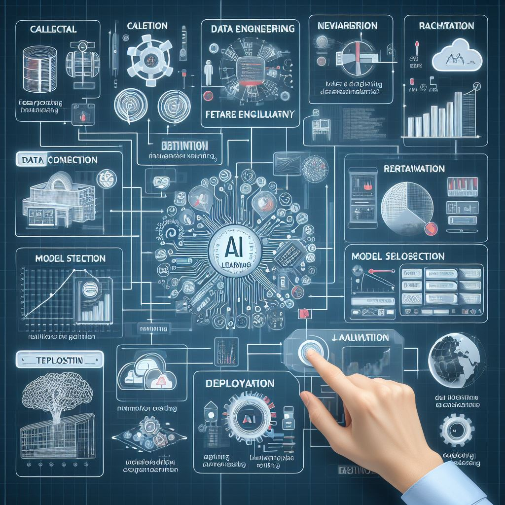

Gallery: Explore the World of AI Learning
Welcome to our Gallery page, where we invite you to immerse yourself in the fascinating world of AI learning. Discover captivating visuals, inspiring stories, and innovative projects that showcase the transformative power of artificial intelligence in education. Scroll through our curated collection and be inspired to embark on your own AI learning journey.
Explore visually engaging infographics that break down complex AI concepts into digestible snippets. From neural networks to natural language processing, our infographics provide intuitive explanations that demystify the world of artificial intelligence.
Discover groundbreaking projects created by learners and educators using AI technology. From machine learning models to AI-driven applications, these showcases demonstrate the practical applications of AI in solving real-world problems and driving innovation.

Step into virtual labs and simulations that offer hands-on experiences with AI algorithms and technologies. Engage in interactive experiments, explore different scenarios, and deepen your understanding of AI concepts through immersive learning experiences.
Experience interactive demos that showcase the capabilities of AI technologies firsthand. From chatbots to image recognition systems, these demos allow you to interact with AI applications and explore their functionalities in real time.
Celebrate the achievements of students who have excelled in AI learning. From award-winning projects to academic accomplishments, these spotlights highlight the talent and dedication of learners who are shaping the future of artificial intelligence.
If you have an AI-related project, event, or story you'd like to feature in our gallery, we'd love to hear from you! Contact us to contribute to our growing collection and inspire others with your passion for AI learning.